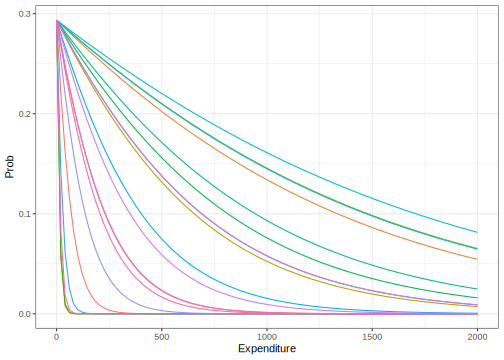
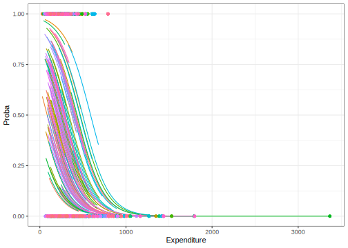

10.3 Introducción a los modelos logístico multinivel.
Los modelos logísticos multinivel son una extensión de los modelos logísticos simples, que se utilizan para predecir la probabilidad de un resultado binario en función de una o varias variables explicativas. Sin embargo, en muchas situaciones, los datos se recogen de individuos que están agrupados en diferentes niveles o unidades de análisis, como escuelas, ciudades o países. En estos casos, los modelos logísticos simples pueden no ser suficientes para capturar la estructura jerárquica de los datos y la variación en las respuestas entre los diferentes grupos.
Los modelos logísticos multinivel resuelven este problema al permitir que los coeficientes del modelo varíen a través de los diferentes niveles de análisis. En otras palabras, se permite que la relación entre las variables predictoras y la respuesta varíe en función del grupo al que pertenece cada individuo.
Además, los modelos logísticos multinivel permiten incluir tanto variables a nivel individual como variables a nivel de grupo, lo que aumenta la precisión de las estimaciones y la capacidad de explicar la variabilidad en las respuestas. También permiten estimar la varianza en las respuestas entre los diferentes grupos, lo que es útil para identificar las fuentes de variabilidad y para comparar la variabilidad entre grupos.
En general, los modelos logísticos multinivel son una herramienta poderosa para analizar datos de respuestas binarias en contextos jerárquicos, y son ampliamente utilizados en muchas áreas de investigación, como la educación, la salud, las ciencias sociales y la psicología.
Sea la variable \(y_{ij} = 1\) si el individuo \(i\) en el estrato \(j\) está por encima de la línea de pobreza y \(y_{ij} = 0\) en caso contrario, la variable \(y_{ij}\) se puede modelar mediante el modelo logístico:
\[ Pr\left(y_{ij}\right)=Pr\left(y_{ij}=1\mid x_{i}:\boldsymbol{\beta}\right)=\frac{1}{1+\exp\left(\boldsymbol{-\beta}_{j}\boldsymbol{x}_{ij}\right)} \]
ó
\[ \log\left(\frac{\pi_{ij}}{1-\pi_{ij}}\right)=\boldsymbol{\beta}_{j}\boldsymbol{x}_{ij} \]
donde,
\[ \pi_{ij}=Pr\left(y_{ij}=1\mid x_{i}:\boldsymbol{\beta}\right) \].
A modo de ejemplo, se ajustará un modelo logístico para la variable pobreza. Inicialmente, se crea la variable dicotómica en la base como se muestra a continuación:
encuesta_plot <- encuesta %>%
dplyr::select(Stratum,Expenditure) %>% unique() %>%
group_by(Stratum) %>%
summarise(sd = sd(Expenditure)) %>%
arrange(desc(sd)) %>% dplyr::select(-sd) %>%
slice(1:20L) %>%
inner_join(encuesta) %>%
dplyr::select(Poverty, Expenditure, Stratum,
Sex, Region, Zone)
encuesta_plot %>% slice(1:15L)| Poverty | Expenditure | Stratum | Sex | Region | Zone |
|---|---|---|---|---|---|
| NotPoor | 3367.5 | idStrt039 | Male | Sur | Urban |
| NotPoor | 3367.5 | idStrt039 | Female | Sur | Urban |
| NotPoor | 3367.5 | idStrt039 | Male | Sur | Urban |
| NotPoor | 312.1 | idStrt039 | Female | Sur | Urban |
| NotPoor | 312.1 | idStrt039 | Female | Sur | Urban |
| NotPoor | 312.1 | idStrt039 | Female | Sur | Urban |
| NotPoor | 312.1 | idStrt039 | Male | Sur | Urban |
| NotPoor | 226.5 | idStrt039 | Male | Sur | Urban |
| NotPoor | 226.5 | idStrt039 | Female | Sur | Urban |
| NotPoor | 616.3 | idStrt047 | Female | Sur | Urban |
| NotPoor | 616.3 | idStrt047 | Female | Sur | Urban |
| NotPoor | 616.3 | idStrt047 | Female | Sur | Urban |
| NotPoor | 1385.7 | idStrt047 | Male | Sur | Urban |
| NotPoor | 1385.7 | idStrt047 | Female | Sur | Urban |
| NotPoor | 1385.7 | idStrt047 | Female | Sur | Urban |
Para poder observar la distribución la distribución de la variable pobreza, se presenta el siguiente gráfico:
encuesta <- encuesta %>% mutate( pobreza = ifelse(Poverty != "NotPoor", 1, 0))
encuesta_plot %<>% mutate(pobreza = ifelse(Poverty != "NotPoor", 1, 0))
ggplot(data = encuesta, aes(y = pobreza, x = Expenditure)) +
geom_point() + geom_smooth(formula = y~x, method = "glm",se=FALSE,
method.args = list(family=binomial(link = "logit"))) + theme_bw()
El ajuste del modelo logístico se realiza con la función glm y la función link “logit”. Una vez se ajusta el modelo, se extraen los coeficientes del modelo y así poder calcular las probabilidades, como sigue a continuación:
auxLogit <- function(x,b0,b1){
1/(1+exp(-(b0+b1*x)))
}
B0 = coef(glm(pobreza~1,data = encuesta_plot,
family=binomial(link = "logit")))
(coef_Mod <- encuesta_plot %>% group_by(Stratum) %>%
summarise(B1 = coef(glm(pobreza ~ -1 + Expenditure,
family=binomial(link = "logit")))) %>%
mutate(B0 = B0)) %>% slice(1:6L)| Stratum | B1 | B0 |
|---|---|---|
| idStrt007 | -0.0189 | -0.8782 |
| idStrt020 | -0.0010 | -0.8782 |
| idStrt022 | -0.0057 | -0.8782 |
| idStrt024 | -0.0020 | -0.8782 |
| idStrt036 | -0.0009 | -0.8782 |
| idStrt039 | -0.0976 | -0.8782 |
A continuación, se grafican los diferentes modelos logísticos ajustados para cada uno de los estratos observándose que, hay una variación importante entre los estratos:
pred_logit <- coef_Mod %>% mutate(Expenditure = list(seq(0,2000, length =100))) %>%
tidyr::unnest_legacy()
pred_logit %<>% mutate(Prob = auxLogit(Expenditure,B0,B1))
ggplot(data = pred_logit, aes(y = Prob, x = Expenditure, colour = Stratum)) +
geom_line() + theme_bw() + theme(legend.position = "none")
Un modelo logístico básico o nulo se escribe de la siguiente manera:
\[ logit( \pi_{ij})=\beta_{0j}+\epsilon_{ij} \]
\[ \beta_{0j}=\gamma_{00}+\tau_{0j} \] Donde los componentes son los siguientes:
- \(\pi_{ij}=Pr\left(y_{ij}=1\mid x_{i}:\boldsymbol{\beta}\right)\).
- \(\beta_{0j}=\) El intercepto en el estrato \(j\).
- \(\epsilon_{ij}\) El residual de la persona \(i\) en el estrato \(j\).
- \(\gamma_{00}=\) El intercepto en general.
- \(\tau_{0j}=\) Efecto aleatorio para el intercepto.
con, \(\tau_{0j}\sim N\left(0,\sigma_{\tau}^{2}\right)\) y \(\epsilon_{ij}\sim N\left(0,\sigma_{\epsilon}^{2}\right)\).
En este caso, la correlación intra clásica está dada por:
\[
\rho=\frac{\sigma_{\tau}^{2}}{\sigma_{\tau}^{2}+\sigma_{\epsilon}^{2}}
\]
En R el modelo nulo se ajusta de la siguiente manera:
library(lme4)
mod_logist_null <- glmer( pobreza ~ ( 1 | Stratum ),
data = encuesta,
weights = wk2,
family = binomial(link = "logit") )
coef( mod_logist_null )$Stratum %>% slice(1:12)| (Intercept) | |
|---|---|
| idStrt001 | -0.8334 |
| idStrt002 | -0.0133 |
| idStrt003 | -2.6023 |
| idStrt004 | -2.7770 |
| idStrt005 | -1.0268 |
| idStrt006 | 1.0100 |
| idStrt007 | -1.0134 |
| idStrt008 | 0.2035 |
| idStrt009 | 2.1966 |
| idStrt010 | -0.5948 |
| idStrt011 | -1.2986 |
| idStrt012 | 0.2825 |
Las estadísticas resumen del modelo se presentan a continuación:
## Generalized linear mixed model fit by maximum likelihood (Laplace
## Approximation) [glmerMod]
## Family: binomial ( logit )
## Formula: pobreza ~ (1 | Stratum)
## Data: encuesta
## Weights: wk2
## AIC BIC logLik -2*log(L) df.resid
## 2966 2978 -1481 2962 2603
## Random effects:
## Groups Name Std.Dev.
## Stratum (Intercept) 1.29
## Number of obs: 2605, groups: Stratum, 119
## Fixed Effects:
## (Intercept)
## -0.802A continuación, se presenta la correlación intraclase, las predicciones del modelo y las variables observadas:
| ICC_adjusted | ICC_unadjusted | optional |
|---|---|---|
| 0.3342 | 0.3342 | FALSE |
(tab_pred <- data.frame(Pred = predict(mod_logist_null, type = "response"),
pobreza = encuesta$pobreza,
Stratum = encuesta$Stratum)) %>% distinct() %>%
slice(1:6L) # Son las pendientes aleatorias| Pred | pobreza | Stratum | |
|---|---|---|---|
| 1 | 0.3029 | 0 | idStrt001 |
| 10 | 0.3029 | 1 | idStrt001 |
| 28 | 0.4967 | 1 | idStrt002 |
| 36 | 0.4967 | 0 | idStrt002 |
| 61 | 0.0690 | 0 | idStrt003 |
| 84 | 0.0586 | 0 | idStrt004 |
Para efecto de verificar qué tan buena fueron las predicciones del modelo, se estiman el porcentaje de pobreza de la variable observada y de las predicciones de modelo utilizando la función weighted.mean. Se logra observar que son muy similares las estimaciones:
## [1] 0.3859## [1] 0.385Modelo con intercepto aleatoria
EL modelo se define de la siguiente manera:
\[ logit(\pi_{ij})=\beta_{0}+\beta_{1j}Gasto_{ij}+\epsilon_{ij} \] Donde,
\[
\beta_{1j} = \gamma_{10}+\gamma_{11}Stratum_{j} + \tau_{1j}
\]
Siguiendo las ideas de la sección anterior, el ajuste del modelo en R se realiza de la siguiente manera:
mod_logit_Int_Aleatorio <- glmer(pobreza ~ Expenditure + (1 | Stratum),
data = encuesta, family = binomial(link = "logit"),weights = wk2)
performance::icc(mod_logit_Int_Aleatorio)| ICC_adjusted | ICC_unadjusted | optional |
|---|---|---|
| 0.3151 | 0.1867 | FALSE |
Los coeficientes estimados son:
| (Intercept) | Expenditure | |
|---|---|---|
| idStrt001 | 0.9889 | -0.0066 |
| idStrt002 | 1.8837 | -0.0066 |
| idStrt003 | -0.7463 | -0.0066 |
| idStrt004 | -0.1484 | -0.0066 |
| idStrt005 | 1.7155 | -0.0066 |
| idStrt006 | 3.2456 | -0.0066 |
| idStrt007 | 0.5601 | -0.0066 |
| idStrt008 | 1.6848 | -0.0066 |
| idStrt009 | 3.9332 | -0.0066 |
| idStrt010 | 1.1207 | -0.0066 |
Gráficamente, los modelos ajustados se muestran a continuación:
dat_pred <- encuesta %>% group_by(Stratum) %>%
summarise(Expenditure = list(seq(min(Expenditure),
max(Expenditure), len = 100))) %>% tidyr::unnest_legacy()
dat_pred <- mutate(dat_pred,Proba = predict(mod_logit_Int_Aleatorio,
newdata = dat_pred , type = "response"))
ggplot(data = dat_pred,
aes(y = Proba, x = Expenditure,
colour = Stratum)) +
geom_line()+ theme_bw() +
geom_point(data = encuesta, aes(y = pobreza, x = Expenditure))+
theme(legend.position = "none",
plot.title = element_text(hjust = 0.5)) 
Las predicciones del modelo se presentan a continuación:
(tab_pred <- data.frame(Pred = predict(mod_logit_Int_Aleatorio,
type = "response"),
pobreza = encuesta$pobreza,
Stratum = encuesta$Stratum,
wk2 = encuesta$wk2)) %>% distinct() %>%
slice(1:6L)| Pred | pobreza | Stratum | wk2 |
|---|---|---|---|
| 0.2149 | 0 | idStrt001 | 0.7770 |
| 0.2149 | 0 | idStrt001 | 0.7501 |
| 0.2149 | 0 | idStrt001 | 0.7463 |
| 0.2149 | 0 | idStrt001 | 0.7717 |
| 0.2149 | 0 | idStrt001 | 0.7438 |
| 0.1682 | 0 | idStrt001 | 0.7507 |
Como se indicó anteriormente, para verificar la calidad del modelo se realizan las estimaciones de las predicciones y de las variables observadas, teniendo estimaciones similares:
| Pred | pobreza |
|---|---|
| 0.3855 | 0.3859 |
Modelo con intercepto y pendiente aleatoria
Los modelos logísticos con intercepto y pendiente aleatoria son un tipo de modelo logístico multinivel que permiten que tanto el intercepto como la pendiente varíen aleatoriamente entre los diferentes grupos de observación.
En los modelos logísticos básicos, la relación entre las variables predictoras y la variable de respuesta se modela mediante una función logística, donde la respuesta es la probabilidad de que el resultado binario ocurra. En los modelos con intercepto y pendiente aleatoria, la función logística se ajusta para cada grupo de observación, y tanto el intercepto como la pendiente son variables aleatorias que varían de un grupo a otro. Esto permite que los coeficientes del modelo, que representan la relación entre las variables predictoras y la respuesta, varíen según el grupo de observación.
La incorporación de coeficientes aleatorios en los modelos logísticos multinivel permite capturar la heterogeneidad en la relación entre las variables predictoras y la respuesta en diferentes grupos de observación, y mejora la precisión de las estimaciones. Además, estos modelos también permiten la inclusión de variables a nivel individual y a nivel de grupo, lo que permite una mejor comprensión de la estructura jerárquica de los datos. El modelo se define de la siguiente manera:
\[ logit(\pi_{ij})=\beta_{0j}+\beta_{1j}Gasto_{ij}+\epsilon_{ij} \]
con,
\[ \beta_{0j} = \gamma_{00}+\gamma_{01}Stratum_{j} + \tau_{0j} \]
donde,
\[ \beta_{1j} = \gamma_{10}+\gamma_{11}Stratum_{j} + \tau_{1j} \]
En R, el ajuste se hace de la siguiente manera:
mod_logit_Pen_Aleatorio <- glmer(pobreza ~ Expenditure + (1 + Expenditure| Stratum),
data = encuesta, weights = wk2, binomial(link = "logit"))
performance::icc(mod_logit_Pen_Aleatorio)| ICC_adjusted | ICC_unadjusted | optional |
|---|---|---|
| 0.8859 | 0.6534 | FALSE |
Los coeficientes del modelo son:
| (Intercept) | Expenditure | |
|---|---|---|
| idStrt001 | 5.244 | -0.0271 |
| idStrt002 | 11.059 | -0.0394 |
| idStrt003 | -1.614 | -0.0060 |
| idStrt004 | 1.655 | -0.0153 |
| idStrt005 | 9.055 | -0.0289 |
| idStrt006 | -1.354 | 0.0100 |
| idStrt007 | 1.035 | -0.0136 |
| idStrt008 | 1.473 | -0.0056 |
| idStrt009 | 4.050 | -0.0048 |
| idStrt010 | 4.310 | -0.0214 |
Gráficamente el ajuste de los modelo se muestra a continuación:
dat_pred <- encuesta %>% group_by(Stratum) %>%
summarise(Expenditure = list(seq(min(Expenditure), max(Expenditure), len = 100))) %>%
tidyr::unnest_legacy()
dat_pred <- mutate(dat_pred,Proba = predict(mod_logit_Pen_Aleatorio, newdata = dat_pred , type = "response"))
ggplot(data = dat_pred,
aes(y = Proba, x = Expenditure,
colour = Stratum)) +
geom_line()+ theme_bw() +
geom_point(data = encuesta, aes(y = pobreza, x = Expenditure))+
theme(legend.position = "none",
plot.title = element_text(hjust = 0.5)) Las predicciones se muestran a continuación:
(tab_pred <- data.frame(
Pred = predict(mod_logit_Pen_Aleatorio,
type = "response"),
pobreza = encuesta$pobreza,
Stratum = encuesta$Stratum,
wk2 = encuesta$wk2)) %>% distinct() %>%
slice(1:6L) | Pred | pobreza | Stratum | wk2 |
|---|---|---|---|
| 0.0154 | 0 | idStrt001 | 0.7770 |
| 0.0154 | 0 | idStrt001 | 0.7501 |
| 0.0154 | 0 | idStrt001 | 0.7463 |
| 0.0154 | 0 | idStrt001 | 0.7717 |
| 0.0154 | 0 | idStrt001 | 0.7438 |
| 0.0045 | 0 | idStrt001 | 0.7507 |
La calidad de la predicción del modelo es muy buena como se muestra a continuación:
| Pred | pobreza |
|---|---|
| 0.3845 | 0.3859 |
Por otro lado, se ajusta un modelo agregando ahora la variable zona. La idea es entonces medir el porcentaje de pobreza discriminando por zona. El modelo es el siguiente:
\[ logit(\pi_{ij})=\beta_{0j}+\beta_{1j}Gasto_{ij}+\beta_{2j}Zona_{ij} +\epsilon_{ij} \] Donde, \[ \beta_{0j} = \gamma_{00}+\gamma_{01}Stratum_{j} + \gamma_{02}\mu_{j} + \tau_{0j} \] con,
\[ \beta_{1j} = \gamma_{10}+\gamma_{11}Stratum_{j} + \gamma_{12}\mu_{j} + \tau_{1j} \] y,
\[ \beta_{2j} = \gamma_{20}+\gamma_{21}Stratum_{j} + \gamma_{12}\mu_{j} + \tau_{2j} \]
donde \(\mu_{j}\) es el gasto medio en el estrato \(j\).
El ajuste del modelo es el siguiente:
mod_logit_Pen_Aleatorio2 <- glmer(
pobreza ~ 1 + Expenditure + Zone + mu +
(1 + Expenditure + Zone + mu | Stratum ),
data = encuesta, weights = wk2,
binomial(link = "logit"))
performance::icc(mod_logit_Pen_Aleatorio2)## [1] NASe grafican los modelos ajustados anteriormente:
dat_pred <- encuesta %>% group_by(Stratum, Zone, mu) %>%
summarise(
Expenditure = list(seq(min(Expenditure),
max(Expenditure), len = 100))) %>%
tidyr::unnest_legacy()
dat_pred$Proba = predict(mod_logit_Pen_Aleatorio2,
newdata = dat_pred , type = "response")
ggplot(data = dat_pred,
aes(y = Proba, x = Expenditure,
colour = Stratum)) +
geom_line()+ theme_bw() +facet_grid(.~Zone)+
geom_point(data = encuesta, aes(y = pobreza, x = Expenditure))+
theme(legend.position = "none",
plot.title = element_text(hjust = 0.5)) Se logra observar que, hay una variación importante en el ajuste de los modelos para cada zona. Ahora bien, las predicciones del porcentaje de pobreza por zona se calculan a continuación:
(tab_pred <- data.frame(
Pred = predict(mod_logit_Pen_Aleatorio2,
type = "response"),
pobreza = encuesta$pobreza,
Stratum = encuesta$Stratum,
Zone = encuesta$Zone,
wk2 = encuesta$wk2)) %>% distinct() %>%
slice(1:6L) | Pred | pobreza | Stratum | Zone | wk2 |
|---|---|---|---|---|
| 0.0123 | 0 | idStrt001 | Rural | 0.7770 |
| 0.0123 | 0 | idStrt001 | Rural | 0.7501 |
| 0.0123 | 0 | idStrt001 | Rural | 0.7463 |
| 0.0123 | 0 | idStrt001 | Rural | 0.7717 |
| 0.0123 | 0 | idStrt001 | Rural | 0.7438 |
| 0.0035 | 0 | idStrt001 | Rural | 0.7507 |
Por último, se verifica la calidad de las predicciones, obteniendo, como en los modelos anteriores, unas predicciones de buena calidad haciendo las comparaciones con las estimaciones de la variable observada para cada una de las zonas.
tab_pred %>% group_by(Zone) %>%
summarise(Pred = weighted.mean(Pred, wk2),
pobreza = weighted.mean(pobreza,wk2))| Zone | Pred | pobreza |
|---|---|---|
| Rural | 0.4283 | 0.4298 |
| Urban | 0.3408 | 0.3437 |